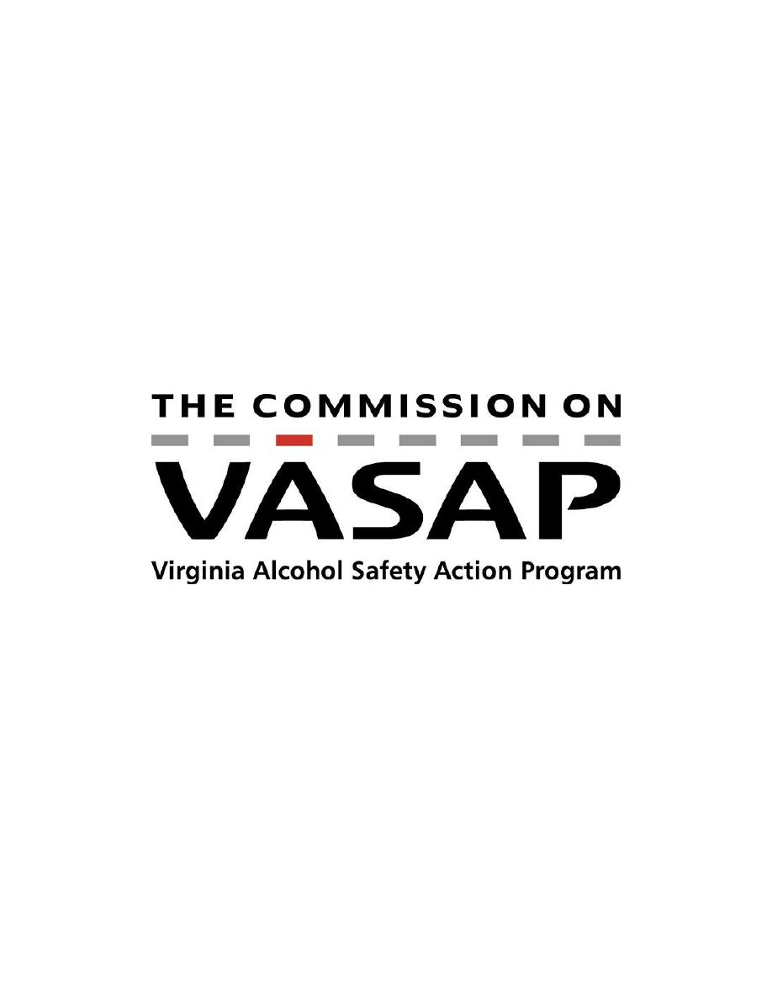

Annual Executive Summary
2009

Introduction
The Virginia Alcohol Safety Action Program traces its roots to Fairfax County. In 1972, it
became the site of one of 35 national “Alcohol Safety Action Projects” funded by the National
Highway Traffic Safety Administration (NHTSA). On March 24, 1975, legislation passed by the
General Assembly expanded this program statewide establishing driver education and
rehabilitation programs in an effort to reduce the number of highway tragedies.
There are currently 24 Alcohol Safety Action Programs throughout Virginia. Every jurisdiction
in the Commonwealth is covered. They have the responsibility of doing everything they can to
lower the number of impaired drivers on our roadways. Efforts have paid off because the
number of DUI deaths in Virginia continues to decline each year.
In 1986, the General Assembly formed the Commission on Virginia Alcohol Safety Action
Program (Commission on VASAP). This provided for the standardization of ASAP operations,
increasing the quality and equity of services to offenders statewide. Section 18.2-271.2 of the
Code of Virginia requires the Commission on VASAP to submit to the Governor and the General
Assembly an annual executive summary of the interim activity and work of the Commission.
This report provides an overview of Commission on VASAP activities during 2009.
Mission
To improve highway safety by decreasing the incidence of driving under the influence of alcohol
and other drugs, leading to the reduction of alcohol and drug-related fatalities and crashes.
Objectives
1. Deter the motoring public from driving under the influence of alcohol and other drugs.
2. Deter those arrested and convicted of driving under the influence from becoming repeat
offenders.
3. Increase awareness to aid in the identification, apprehension and conviction of offenders
driving under the influence of alcohol and other drugs.
4. Raise the conviction rate for offenders and the number of appropriate referrals to Alcohol
Safety Action Programs.
5. Ensure appropriate probationary control of offenders.
6. Ensure the delivery of proper education and treatment services for offenders.
7. Provide statewide offender tracking services for all ASAPs.
8. Increase public awareness of the civil and legal consequences of DUI arrests, public
perception of transportation crash risks and public activities to reduce DUI incidents.
9. Assess and maintain the effectiveness and self-supporting status of both the Commission and
local Alcohol Safety Action Programs.
1

Programs
VASAP has developed many educational programs designed to improve highway safety,
providing a credible Alcohol Safety Action Program that responds to the needs of each locality
in Virginia. Included among these are:
• Reckless/Aggressive Driver Program
• Habitual Offender Restoration Reviews
• Driver Improvement
• First Offender Drug Programs
• Young Offender Program
• Relapse Prevention Education
• Adolescent Alcohol Education
• Victim Impact Panels
• Driving Suspended Program
• Community Service Program
• Ignition Interlock Program
• Drug Testing/Urine Screening
• DUI Court (Fredericksburg)
Overview of the Commission
§18.2-271.2. Commission on VASAP; purpose; membership; terms; meetings; staffing;
compensation and expenses; chairman's executive summary.
A. There is hereby established in the legislative branch of state government the Commission on
the Virginia Alcohol Safety Action Program (VASAP). The Commission shall administer and
supervise the state system of local alcohol and safety action programs, develop and maintain
operation and performance standards for local alcohol and safety action programs, and allocate
funding to such programs. The Commission shall consist of 15 members that include six
legislative members and nine nonlegislative citizen members. Members shall be appointed as
follows: four current or former members of the House Committee for Courts of Justice, to be
appointed by the Speaker of the House of Delegates in accordance with the principles of
proportional representation contained in the Rules of the House of Delegates; two members of
the Senate Committee for Courts of Justice, to be appointed by the Senate Privileges and
Elections Committee; three sitting or retired judges, one each from the circuit, general district
and juvenile and domestic relations district courts, who regularly hear or heard cases involving
driving under the influence and are familiar with their local alcohol safety action programs, to be
appointed by the Chairman of the Committee on District Courts; two directors of local alcohol
safety action programs, to be appointed by the legislative members of the Commission; one
representative from the law-enforcement profession, to be appointed by the Speaker of the House
and one nonlegislative citizen at large, to be appointed by the Senate Committee on Privileges
and Elections; one representative from the Virginia Department of Motor Vehicles whose duties
are substantially related to matters to be addressed by the Commission to be appointed by the
Commissioner of the Department of Motor Vehicles, and one representative from the
2
Department of Mental Health, Mental Retardation and Substance Abuse Services whose duties
also substantially involve such matters, to be appointed by the Commissioner of the Department
of Mental Health, Mental Retardation and Substance Abuse Services. Legislative members shall
serve terms coincident with their terms of office. In accordance with the staggered terms
previously established, nonlegislative citizen members shall serve two-year terms. All members
may be reappointed. Appointments to fill vacancies, other than by expiration of a term, shall be
made for the unexpired terms. Any appointment to fill a vacancy shall be made in the same
manner as the original appointment.
B. The Commission shall meet at least four times each year at such places as it may from time to
time designate. A majority of the members shall constitute a quorum. The Commission shall
elect a chairman and vice-chairman from among its membership.
The Commission shall be empowered to establish and ensure the maintenance of minimum
standards and criteria for program operations and performance, accounting, auditing, public
information and administrative procedures for the various local alcohol safety action programs
and shall be responsible for overseeing the administration of the statewide VASAP system. Such
programs shall be certified by the Commission in accordance with procedures set forth in the
Commission on VASAP Certification Manual. The Commission shall also oversee program
plans, operations and performance and a system for allocating funds to cover deficits that may
occur in the budgets of local programs.
C. The Commission shall appoint and employ and, at its pleasure, remove an executive director
and such other persons as it may deem necessary, and determine their duties and fix their salaries
or compensation.
D. The Commission shall appoint a Virginia Alcohol Safety Action Program Advisory Board to
make recommendations to the Commission regarding its duties and administrative functions. The
membership of such Board shall be appointed in the discretion of the Commission and include
personnel from (i) local safety action programs, (ii) state or local boards of mental health and
mental retardation and (iii) other community mental health services organizations. An assistant
attorney general who provides counsel in matters relating to driving under the influence shall
also be appointed to the Board.
E. Legislative members of the Commission shall receive compensation as provided in § 30-
19.12. Funding for the costs of compensation of legislative members shall be provided by the
Commission. All members shall be reimbursed for all reasonable and necessary expenses as
provided in §§ 2.2-2813 and 2.2-2825 to be paid out of that portion of moneys paid in VASAP
defendant entry fees which is forwarded to the Virginia Alcohol Safety Action Program.
F. The chairman of the Commission shall submit to the Governor and the General Assembly an
annual executive summary of the interim activity and work of the Commission no later than the
first day of each regular session of the General Assembly. The executive summary shall be
submitted as provided in the procedures of the Division of Legislative Automated Systems for
the processing of legislative documents and reports and shall be posted on the General
Assembly's website.
3
Commission Members
Legislative
Senator Henry L. Marsh, III, Chairman
Senator Kenneth T. Cuccinelli, II
Delegate Salvatore Iaquinto, Vice Chairman
Delegate
C.
Todd
Gilbert
Delegate Ward L. Armstrong
Delegate
Jackson
H.
Miller
Judicial
Honorable James F. Almand
Honorable George D. Varoutsos
Honorable George W. Harris, Jr.
At-large Members
Ms. Susan E. Marchon
Mr. Roy-Keith Lloyd
Mr.
John
L.
Saunders
Ms.
Pat
Eggleston
Sheriff Michael L. Wade
Commission Staff
Debra D. Gardner – Executive Director
Richard Foy – Technical Instructor
Angela Coleman – Field Services Supervisor
Christine Walker – Fiscal Technician
John Kimbel – IT Administrator
Oscar Brinson – Legal Counsel
Tracy Thacker – Executive Secretary
Commission Meeting Dates (2009)
Feb. 11th June 5th Sept. 18th Nov. 24th (Special Session) Dec. 4th
Advisory Board
The Commission on VASAP, as mandated by the Code of Virginia, has an appointed advisory
board which makes recommendations to the Commission regarding its duties and administrative
functions.
4
Component Area Activities
In keeping with VASAP’s mission to improve highway safety, the VASAP system operates
within five component target areas.
Case Management/Offender Intervention
Persons referred to ASAP are monitored by case managers who assess and classify offenders to
determine the most appropriate education and/or treatment services needed.
In 2009, the Commission on VASAP:
• proactively assisted local ASAPs to address fiscal challenges and enhance local program
services by continuing the reduction in the amount of state share fees that local programs
submit to the state office (as required by § 18.2-271.1 of the Code of Virginia) from six
percent (6%) to three percent (3%).
• provided services for over 81,000 citizens of the Commonwealth.
• participated as a member of the Supreme Court’s statewide Drug Court Advisory
Committee, tasked with creating standards and guidelines, and reviewing and approving
applications for specialty court programs.
• conducted a system-wide Super Conference in Virginia Beach, August 10-12, for
approximately 250 members of all local ASAPs.
• provided ongoing technical support and infrastructure for maintenance of the offender
tracking system.
• implemented recommendations from the Substance Abuse Services Council Annual
Report (to the Governor and the General Assembly) to include identifying programs and
evaluations that have documented success and encouraging interagency data collection.
• served on the Surface Transportation Safety (STS) executive committee, assisting with
the development of the Commonwealth’s Strategic Highway Safety Plan and
implementation of several of its elements.
• worked with the Department of Motor Vehicles on matters related to restricted license
orders, ignition interlock, and ASAP compliance.
• provided two facilitator training sessions in Richmond (Nov. 21
st
) and Fredericksburg
(Dec. 12
th
) on standard ASAP case management procedures and ASAP curriculum
reviews and updates.
• conducted two case management trainings on offender classification guidelines and
criteria for case managers from all 24 local alcohol safety action programs.
• issued a Request for Proposals to contract for ignition interlock services in Virginia that
resulted in the selection of four vendors.
• issued new regulations governing the operation of the ignition interlock program in the
Commonwealth.
• promulgated an ignition interlock guidance document for use by vendors and local
ASAPs.
• produced an informational brochure for offenders assigned to the ignition interlock
program.
5
• monitored and inspected ignition interlock service centers.
• provided an ignition interlock program training session for vendors and ASAP directors.
• sent state office personnel to the Lifesaver’s transportation safety conference in
Nashville, March 29 – April 1.
• worked cooperatively with the executive committee of the VASAP Directors’
Association and attended all of their quarterly meetings and fall and spring conferences.
• provided managerial oversight for ASAPs during the absence of local program directors.
• updated and provided a driver improvement curriculum for use by local ASAPs.
• participated in a workgroup to develop a new young offender curriculum.
2009 VASAP REFERRALS
TOTAL REFERRALS BY AGE*
PERCENTAGE
< 16
0.15%
16 – 25
37.37%
26 – 35
25.51%
36 – 45
17.39%
46 – 65
18.28%
> 65
1.30%
TOTAL REFERRALS BY RACE*
PERCENTAGE
African American
21.86%
Asian
1.98%
Caucasian
69.94%
Hispanic
5.57%
Other
0.65%
TOTAL REFERRALS BY GENDER*
PERCENTAGE
Male
72.47%
Female
27.53%
DUI REFERRALS BY CURRICULUM**
Education
29.96%
Intensive Education
27.33%
Treatment
45.71%
Drug Education
0.00%
* “Total referrals” include all persons receiving any type of ASAP service (n = 81,531).
** “DUI referrals” include only those persons referred to ASAP as a result of a DUI
conviction (n = 30,701).
6
Adjudication
VASAP, prosecutors, and the courts work together to ensure the efficient processing of those
convicted of driving under the influence and referred to VASAP for probation.
In 2009, the Commission on VASAP:
• partnered with the Virginia Departments of State Police, Motor Vehicles, Game and
Inland Fisheries, and Alcoholic Beverage Control to plan, coordinate, and host the 2009
Judicial Transportation Safety Conference at Virginia Beach, August 11-13.
• provided staff in many jurisdictions to assist judges and clerks of court with the
processing of DUI cases.
• continued to provide support for the DUI court in Fredericksburg.
• produced an adult offender DUI sanctions chart and distributed it to judges and attorneys.
• sent brochures on teenage drinking and driving to Virginia juvenile and domestic
relations courts for use in drivers’ licensing ceremonies.
• presented legislative updates and information on ASAP policy to judges at the Judicial
Transportation Safety Conference.
Enforcement
VASAP enhances law enforcement efforts to reduce alcohol and other drug-related crashes by
providing training to detect and apprehend those driving under the influence.
In 2009, the Commission on VASAP:
• monitored committee meetings of the General Assembly to track the introduction and
passage of DUI enforcement legislation.
• sent informational materials to police departments for distribution to the public.
• attended training for law enforcement personnel and Commonwealth attorneys provided
by local ASAPs.
Public Information/Education
VASAP helps reduce the number of impaired driving injuries and fatalities by increasing public
awareness through education, and by encouraging responsible decision making. Each program
conducts local public information efforts with training and support materials from the
Commission.
In 2009, the Commission on VASAP:
• hosted an information and education booth at the Judicial Transportation Safety
Conference, August 11-13.
• updated and reprinted existing public information and education materials and revised the
Teenage Drinking and Driving brochure to reflect changes in the law.
• attended the 10
th
anniversary celebration of the Fredericksburg DUI court.
7
• expanded public information efforts by sending brochures to high schools, community
colleges, universities, businesses, insurance companies, county administrators’ offices,
regional jails, mass transit sites, and private driving schools.
• provided materials for distribution at the State Fair of Virginia, September 24 – October
4.
• provided curriculum materials to law enforcement agencies involved in school
alcohol/tobacco prevention programs.
• provided curriculum materials for juvenile justice agencies on substance abuse prevention
and education.
• provided an information booth on two occasions at the “Fridays at Sunset” festival in
Richmond, July 24 and August 8. Written prevention materials were distributed to the
public on the dangers and consequences of drinking and driving.
• continued to be a member of the Highway Safety Challenge committee with VDOT,
VSP, DMV and other non-profit and private sector organizations to develop innovative
and effective strategies to reduce traffic fatalities by encouraging motorists to be
responsible drivers.
• provided a presentation on underage drinking and the use of tobacco for summer campers
at Camp Courage in Chesterfield County.
Evaluation/Certification
The Commission on VASAP is responsible for periodically evaluating and recertifying each
ASAP to ensure that services in the communities are effective, consistent, and appropriate.
In 2009, the Commission on VASAP:
• issued a Request for Proposals and selected a single company to provide audits of the 24
local ASAPs for the Commission on VASAP.
• audited and reviewed the budgets of the 24 local alcohol safety action programs
(ASAPs).
• underwent a financial audit of the state office with no findings of deficiencies.
• performed field visits of local ASAPs.
• conducted management reviews of local programs.
• attended and presented information on program operations at local policy board meetings.
• conducted certifications of all ASAP programs in the Colonial region.
• completed follow-up certification reviews of local ASAPs.
• continued to serve as a member agency in the cooperative agreement between
DMV/Governor’s Highway Safety Office and NHTSA on the development and
maintenance of the Virginia Crash Outcome Data Evaluation System (CODES).
• continued the process to review and revise all VASAP regulations.
• provided training on the program certification process for local ASAP directors.
As demonstrated by the above data, the Commission on VASAP continued to provide quality
services to the citizens of the Commonwealth in 2009, despite a very challenging economic
8

9
environment. This was accomplished without using general fund revenues. The Commission
looks forward to ongoing success in 2010 as it works cooperatively with the general assembly to
reduce traffic-related injuries and fatalities.